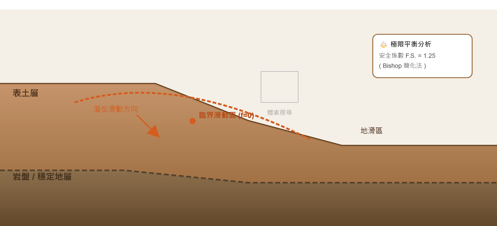

透過隱式曲面重建技術，自動從地質鑽孔資料或數值模型提取 滑動面 與 地層界面，結合極限平衡法（Bishop, Janbu）計算安全係數。

圖2：根據強度參數 (c, φ) 定義隱式函數，自動搜尋臨界滑動面，無需預先設定滑動形狀。
輸入地層分界點與岩層位態，產生三維隱式曲面，再以程式計算不同水位下之安全係數變化。本方法已初步整合至 Python 原型，並輸出可視化網格。
滑動面候選網格 (等值面)